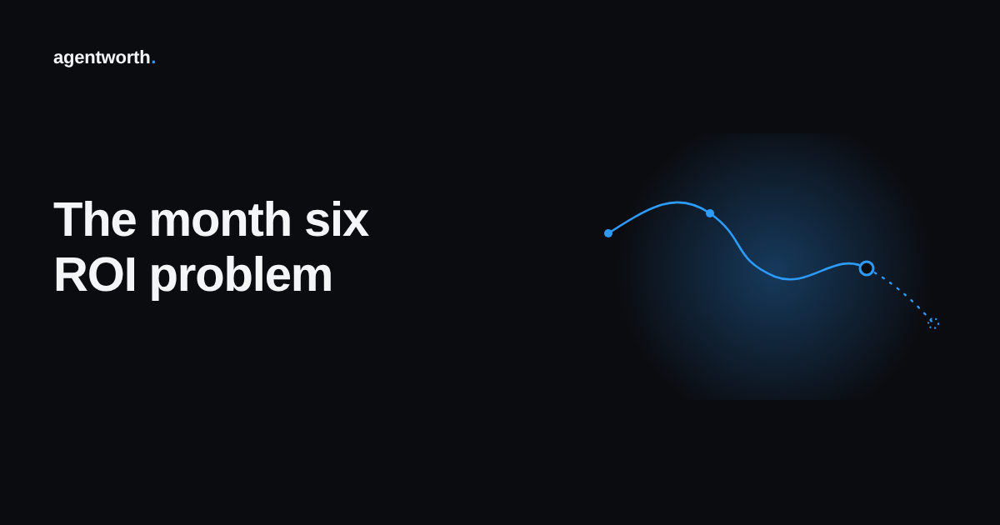

The month six problem in AI agent ROI claims

Every AI agent ROI number you have ever seen in a deck was measured once. Usually a few weeks after launch, when the team is still watching it closely, the tuning is fresh, and the early results are good enough to put in front of the board. Then the deck gets approved, everyone moves on to the next project, and nobody opens that spreadsheet again.
That single measurement becomes the permanent answer to "is the agent working." Six months later it is still the number people quote, even though almost nothing about the agent, the ticket mix, or the team running it has stayed the same.
Why the first good number is usually the best one
Early results tend to be flattering for reasons that have nothing to do with the agent getting better. Right after launch, someone is usually watching every conversation it has, catching mistakes before they reach a customer and quietly fixing prompts in real time. The ticket mix in the first few weeks is often the simplest, most repetitive slice of the queue, the cases a team picks on purpose to build confidence before expanding scope. And the comparison group, if there is one at all, is fresh and clean, not yet muddied by a product change or a pricing update that shifts what customers are even asking about.
None of that is dishonest. It is just a snapshot of the easiest possible conditions, taken at the one moment those conditions were guaranteed to exist.
What actually happens after the slide gets approved
Once the number has done its job and the project is considered proven, the close attention that made it look good tends to fade. Support teams expand the agent into harder, messier ticket types because that is the whole point of scaling it, and those cases were never part of the original measurement. A model provider ships an update that changes how the agent phrases an answer or when it decides to hand off, and nobody notices until a customer complains. Product and pricing keep moving, so the questions customers ask next quarter look nothing like the questions it was tuned on at launch.
Every one of those changes can move the real savings number up or down, often down, and almost none of them get caught, because the team that would notice already moved on to the next initiative. The audit trail that could show the drift either never existed or stopped being checked the day after the board meeting.
What a number that survives month six actually needs
A trustworthy ROI figure cannot be a single data point treated as a permanent fact. It needs the same measurement running continuously, on the same terms it ran at launch, so a reviewer can see whether the line is holding, climbing, or quietly sliding. That means every case the agent touches logged with an outcome and a cost long after the honeymoon period ends, not just during it. It means tracking the ticket mix over time so a shift toward harder cases shows up as a shift in the numbers instead of a surprise in next year's budget review. And it means somebody, or something, is actually looking at that trend instead of trusting that the launch number still applies.
This is the part most teams skip, not because they do not care, but because nobody wants to own an ongoing measurement job on top of everything else they are shipping. It is also the part that turns a one time claim into something finance can actually rely on from quarter to quarter.
It is also exactly what agentworth is built to do. The audit log does not stop the week after launch, it keeps running, case by case, so the number in month six is measured the same honest way as the number in week two, and anyone can check whether the curve is still pointing in the right direction.
If you want to see where your own numbers tend to sit months after launch, try the free ROI calculator, or read the full ROI report for more on how AI agent spending and proof of payoff tend to drift apart over time.